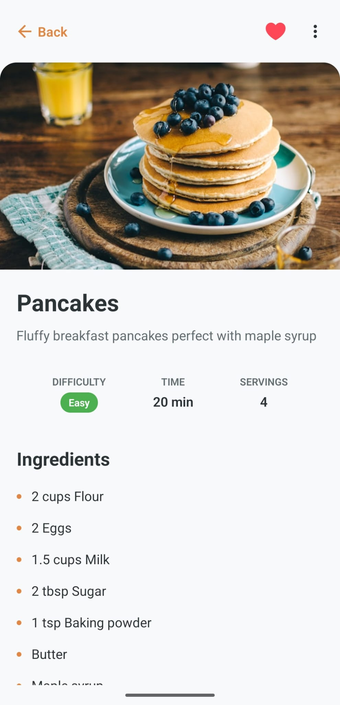
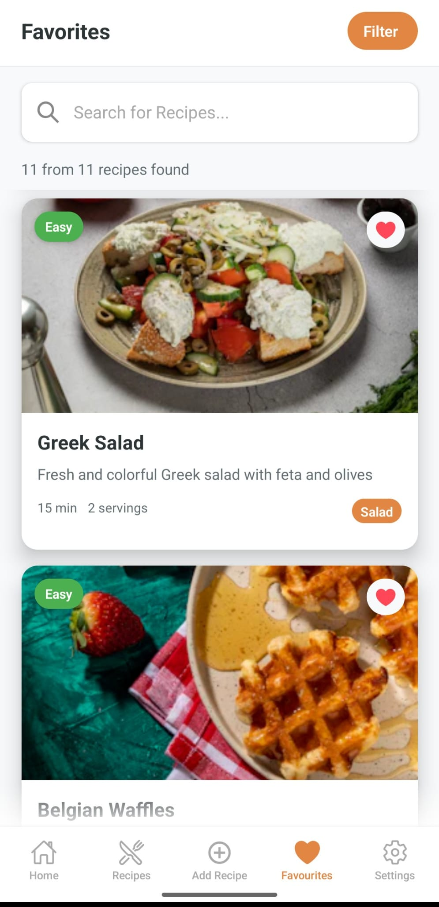

App Preview
Experience GoRecipe's intuitive user interface



Discover, cook, and share your favorite recipes right from your smartphone!
A complete solution for all your culinary needs
Browse thousands of recipes and find new favorite dishes for every occasion and taste.
Create and save your own recipes with photos, ingredients, and detailed preparation steps.
Collect your favorite recipes in personalized lists and have them always at hand.
Share your culinary creations with friends and family or discover their secret recipes.
Back up your recipes to an external file for safekeeping.
Access your saved recipes even without an internet connection - perfect for the kitchen.
Experience GoRecipe's intuitive user interface
Learn more about GoRecipe and get support
Learn more about the app, the development team, and the vision behind GoRecipe.
Frequently asked questions, troubleshooting, and direct contact with our support team.
Information about how we collect, use, and protect your data.
GoRecipe was developed with a passion for good food and modern technology. The app helps you organize your favorite recipes, find new culinary inspiration, and share your own creations.
Perfect for home cooks, foodie enthusiasts, and anyone who wants to digitally organize their culinary journey.